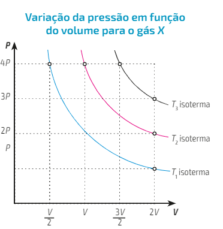
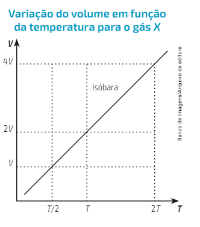
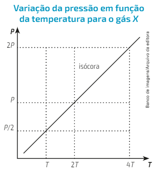

Um gás ideal caracteriza-se por ser um modelo hipotético. Idealização de moléculas aleatórias e constantes. No entanto, para chegar em um comportamento ideal, é necessária uma atm rarefeita (maiores volumes, menores pressões).
No estado gasoso, as moléculas estão bem afastadas (menores forças intermoleculares) e também possuem alta energia cinética.
Volume: Assume o volume do recipiente que o contém. (Unidade padrão: Litro).
Temperatura: (Unidade padrão: Kelvin). Temperatura em Kelvin = Temperatura em Célsius + 273 (TK = TC + 273).
Volume: “Número de choques das moléculas contra as paredes do recipiente.” (Unidade padrão: atm).
(P.V = N.R.T)
(P1.V1)/T1 = (P2.V2)/T2
Sistema isolado: Não há troca de energia e massa com o ambiente.
Sistema fechado: Troca de energia, mas não de massa com o ambiente.
Sistema aberto:Troca de energia e massa com o ambiente.
Transformação isotémica: (Temperatura constante) Em um sistema fechado em que a temperatura é mantida constante, verifica-se que determinada massa de gás ocupa um volume inversamente proporcional a sua pressão. (Pi . Vi = Pf. Vf)
Transformação Isobárica (Pressão constante): Em um sistema sob pressão constante, verifica-se que o volume ocupado por determinada massa de gás é diretamente proporcional à sua temperatura termodinâmica. ((Vi/Ti)/(Vf/Tf))
Transformação Isocórica (Volume constante): Em um sistema fechado em que o volume é mantido constante, verifica-se que a pressão exercida por determinada massa de gás é diretamente proporcional a sua temperatura termodinâmica. ((Pi/Ti)/(Pf/Tf))
As relações que valem para um único gás também servem para uma mistura, visto que não houve reação química. Relações básicas entre cada espécie de gás de uma mistura e todos os outros componentes gasosos da mistura:
Fração molar: relação entre a quantidade em mols de cada gás com a quantidade total. Dado uma mistura com três gases, A,B e C temos:
(X1 = N1/N_total), (X2 = N2/N_total), (X3 = N3/N_total).
Pressão parcial ou lei de Dalton: a pressão total exercida por uma mistura gasosa é igual a soma das pressões parciais dos gases que compõem a mistura. Considerando uma mistura com os gases A,B e C, temos:
P total = Pa + Pb + Pc.
Volume parcial ou lei de Amagat: o volume total de uma misturagasosa é igual a soma dos volumes parciais dos gases que as compôem. Considerando os gases A,B e C, temos:
V total = Va + Vb + Vc..
Massa molar aparente: a massa molar aparente indica a massa de 1 mol de partículas da mistura. Podemos calcula-la com a seguinte fórmula:
M aparente = (M total/N total)
onde M = massa aparente, M total = quantidade total de massa da mistura, N Total = quantidade total de matéria da mistura.
Densidade aparente: através da equação de Clapeyron se encontra a fórmula para encontrar a densidade aparente de uma mistura gasosa:
D aparente = ((P x M apa)/(R x T)).
Difusão: Denomina-se difusão o movimento espontâneo das partículas de um gás de se espalharem uniformemente em meio as partículas de outro gás, ou atravessar uma parede porosa. Ex: furar um balão dentro do recipiente, o gás irá preencher totalmente o espaço, sem vazamento algum.
Efusão A efusão refere-se ao movimento espontâneo de escape das particulas de um gas contido num recipiente por um pequeno orificio para o ambiente externo de pressão mais baixa. Ex: podemos usar o exemplo anterior, so que o recipiente possui um furo, então o gás escapa.
Caracteriza-se por ser uma bebida fabricada industrialmente, sem fermento e sem álcool. É composta por: água, açucar, gás carbônico e pode conter edulcorante, extratos ou aroma sintetizado de frutas ou outros vegetais.
O gás adicionado ao refrigerante é o Gás Carbônico (CO2). Ao ser dissolvido em água com uma determinada pressão, forma-se a substância chamada ácido carbônico (H2CO3).Porém, quando ele é aberto, perde CO2 e a maioria de sua pressão interna. Vira gás novamente o que era líquido. E, o CO2 também é a razão de adicionar o refrigerante no copo e bolhas aparecerem.